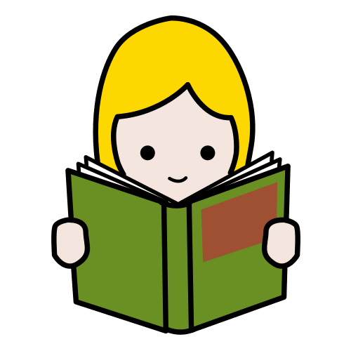
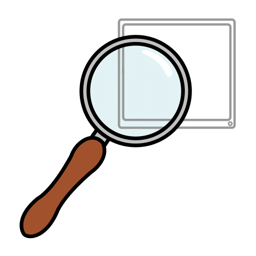
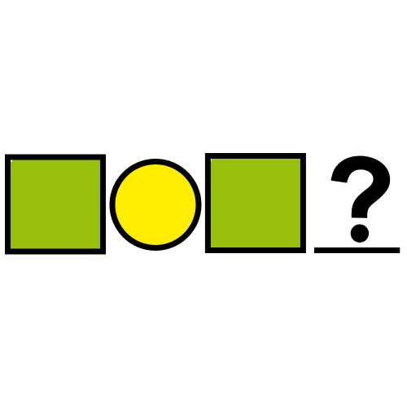
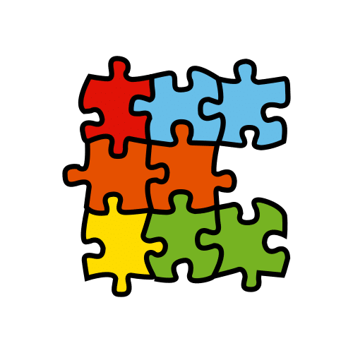
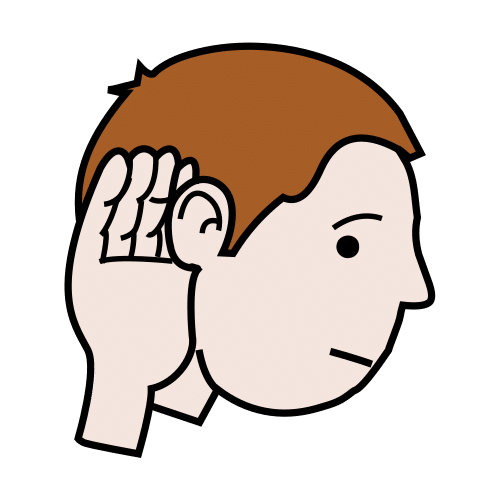
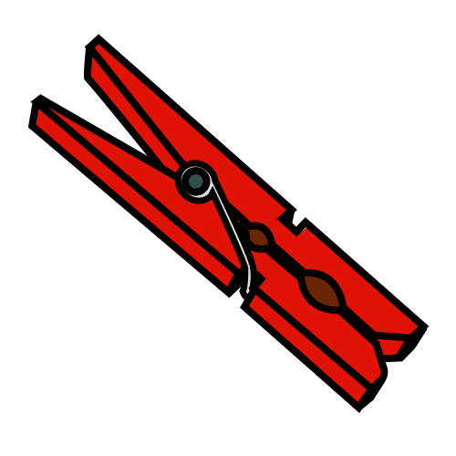
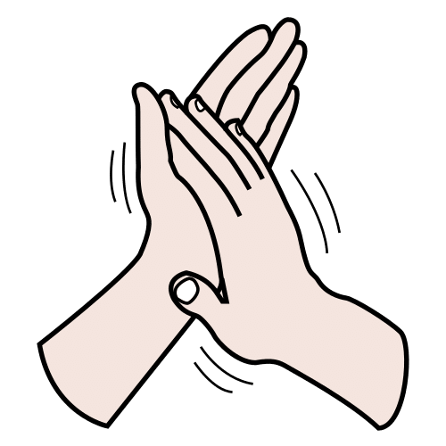
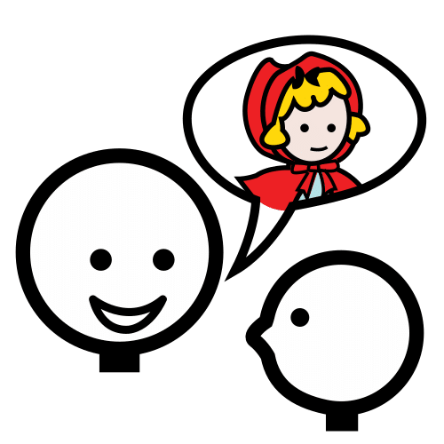

Siete juegos con las palabras del invierno, de las sílabas a las historias.
Pensado desde el Diseño Universal para el Aprendizaje (DUA), con tres niveles en cada juego. Pictogramas de Sergio
Palao para ARASAAC (Gobierno de Aragón), licencia CC BY-NC-SA.
Licencia CC BY-NC-SA 4.0 ideducando.es
7 juegos en 3 niveles
De un vistazo · Infantil, de 3 a 6 años
Rincón de lenguaje de invierno
Siete bandejas para jugar con las palabras del invierno. Cada una tiene un juego en tres niveles y una tarjeta de
pasos con pictogramas. Completa las Rutinas de invierno en el cole y las Estaciones de matemáticas de invierno: usa
el mismo vocabulario y los mismos grupos.
Para quiénLa clase entera de Infantil, de 3 a 6 años, y los apoyos en pequeño grupo de Pedagogía
Terapéutica (PT) y de Audición y Lenguaje (AL).
Cuánto duraDe 10 a 15 minutos por bandeja. Da juego todo el invierno: abre una o dos bandejas nuevas
cada semana.
Cómo se evalúaObservando a cada niño o niña mientras juega, con el registro de la página
.
Las siete bandejas y lo que aprenden
Tres niveles en cada bandeja
Todo el grupo juega a lo mismo. Lo que cambia es la ayuda y la dificultad.
1Con más apoyo: pocas piezas, un modelo para comparar y el adulto al lado.
2Base: lo esperable a esa edad.
3Con más reto: palabras más largas y algo de lectura o de escritura.
Mayúscula y minúscula
Las palabras van en letra de imprenta, en mayúscula y en minúscula: NIEVE nieve.
Empieza por la que uséis en clase.
La letra distingue bien la l minúscula de la I mayúscula. Si en tu cole usáis letra ligada, escribe la palabra a mano
debajo, antes de plastificar.
Seguridad
Las pinzas, los encuadernadores y el velcro son piezas pequeñas. La Asociación Española de Pediatría (AEP) recuerda que
«La mejor medida preventiva es la supervisión constante» y aconseja intentar evitar las piezas pequeñas en menores de 3 a
5 años (AEP, 2024). Con la clase de 3 años, mejor sin pinzas: que señalen o pongan una tarjeta.
Si lleváis castañas o fruta de verdad para mirarlas y olerlas, preguntad antes a las familias por las alergias. En el
rincón no se comen.
Currículo de Infantil de la Región de Murcia
Qué trabaja del Decreto 196/2022
Texto literal del decreto, con su página en el Boletín Oficial de la Región de Murcia (BORM) n.º 255, de 4 de noviembre de
2022. CRR es el área Comunicación y Representación de la Realidad.
Lo que propone para el aula
«Dentro de los espacios del aula podrá diseñarse un rincón de lenguaje, en el que los niños puedan jugar con todo tipo de
letras, componer palabras […], hacer juegos para trabajar procesos preparatorios para el acceso al lenguaje escrito:
lotos de observación, atención, percepción, semejanzas-diferencias o memoria visual y auditiva». Todo
el rincón. Pág. 33100.
Para el alumnado con dificultades comunicativas, «el uso de pictogramas e identificadores que faciliten la comprensión de
mensajes e instrucciones». Tarjetas de pasos, normas y panel. Pág. 33100.
Una enseñanza de la lectura «donde se desarrolle la conciencia fonológica, conciencia silábica y léxica de nuestro
lenguaje oral». Bandejas 3 a 6. Pág. 33100.
«Los materiales y recursos para trabajar la conciencia fonológica de palabras, sílabas y fonemas, tales como: alfabetos de
letras móviles, puzles silábicos, dominós de sílabas […] ayudarán al alumnado a aproximarse al lenguaje escrito».
Bandejas 3 a 6. Pág. 33101.
Después del nombre propio, «el vocabulario básico que van descubriendo de los centros de interés que se estén
trabajando». Bandeja 1: el invierno. Pág. 33101.
«La adquisición del código escrito no es un objetivo que se deba alcanzar en esta etapa». Por eso
leer y escribir van siempre en el nivel 3, como reto. Pág. 33099.
Las medidas «se regirán por los principios del Diseño Universal de Aprendizaje». Los tres niveles.
Art. 4.6, pág. 33056.
Criterios de evaluación del segundo ciclo
CRR 3.1 «Hacer un uso funcional del lenguaje oral, aumentando su repertorio lingüístico y
construyendo progresivamente un discurso más eficaz, organizado y coherente en contextos formales e informales».
Bandejas 1 y 7. Pág. 33107.
CRR 3.2 «Utilizar el lenguaje oral como instrumento regulador de la acción en las
interacciones con los demás con seguridad y confianza respetando los hábitos sociales básicos como el turno de palabra y
actitud de escucha». Todas. Pág. 33107.
CRR 3.3 «Evocar y expresar espontáneamente ideas a través del relato oral».
Bandeja 7. Pág. 33107.
CRR 4.1 «Mostrar interés por comunicarse a través de códigos escritos, convencionales o no,
valorando su función comunicativa». Bandejas 1 a 4. Pág. 33108.
Saberes básicos del segundo ciclo
CRR-C Pág. 33109
«Discriminación auditiva y conciencia fonológica». Bandejas 3 a 6.
CRR-D y CRR-E Pág. 33109
«Las propiedades del sistema de escritura: hipótesis cuantitativas y cualitativas». Bandejas 2 a 4.
«Otros códigos de representación gráfica: imágenes, símbolos, números…». Los pictogramas.
«La poesía y los juegos de palabras como elementos de aprendizaje y disfrute». Todas.
Cómo organizarlo
Una bandeja para cada juego
Como rincón
Las siete bandejas, en una estantería a su altura. Cada día juega en el rincón un grupo de 3 o 4 y hace la bandeja que
marca el panel (página ). Al día siguiente, su tarjeta baja una fila.
Como estaciones
Toda la clase a la vez: una bandeja en cada mesa y un grupo en cada una. Con la señal, cada grupo pasa a la bandeja
siguiente. Mejor tres o cuatro bandejas por sesión.
Antes de empezar
Presenta cada bandeja en la asamblea. Juega tú delante, pensando en voz alta, con su tarjeta de pasos (página
). Nombrad juntos los dibujos: así todos usan la misma palabra.
Los niveles
Cada nivel va en su bolsa, con su marca: el 1, un círculo 1, el 2, un cuadrado
2 y el 3, un rombo 3. Empieza donde lo ves y cambia de bolsa
cuando haga falta.
Dónde se sienta el adulto
En la ruleta de las historias o en la bandeja nueva. Pon palabras a lo que hacen y repite bien lo que dicen, sin pedir
que lo repitan. Apunta lo que ves (página ).
La señal de cambio
Un reloj de arena o un temporizador visual, a la vista. Un minuto antes, avisa: «Se acaba el tiempo». Luego, una señal
para ojos y oídos, como bajar la luz y cantar algo corto.
De lo grande a lo pequeño: lo que dice la investigación
La conciencia fonológica es darse cuenta de que las palabras se parten en trozos: sílabas y sonidos. El rincón va de lo
grande a lo pequeño: primero palabras (bandejas 1, 2 y 7), después sílabas (3, 4 y 6) y al final el primer sonido (5).
Un metaanálisis del National Reading Panel reunió 52 estudios sobre enseñar a fijarse en los sonidos de las palabras.
Ayudó a aprender a leer y a escribir, también en Infantil y al alumnado con riesgo de dificultades. Funcionó mejor con
letras que sin ellas, con una o dos habilidades a la vez, en grupos pequeños y con un total de entre 5 y 18 horas (Ehri y
otros, 2001). Por eso cada bandeja trabaja una sola cosa, en grupo pequeño, y casi todas llevan letras.
En castellano, un estudio con 136 niños y niñas de 5 y 6 años que aún no leían encontró que la conciencia de las sílabas
ayuda a desarrollar la de los sonidos y se relaciona pronto con la lectura (Jiménez González y Ortiz González, 2000). Por
eso las sílabas van antes que los sonidos.
Para las historias, una revisión de 40 estudios con alumnado de Infantil y Primaria encontró que las intervenciones de
narración mejoran cómo cuentan y cómo entienden las historias. Muchas usan apoyos visuales y enseñan las partes de una
historia (Pico y otros, 2021).
El DUA en este rincón, según CAST, el centro que publica sus pautas (versión 3.0, 2024)
2.1 Aclarar vocabulario, símbolos y estructuras del lenguaje: cada palabra lleva su pictograma.
4.1 Variar y valorar los métodos de respuesta, navegación y movimiento: vale decir, señalar, poner una pinza o colocar una tarjeta.
6.4 Ampliar la capacidad para dar seguimiento al progreso: los puzles y las tarjetas de palabras sirven para comprobar.
8.2 Optimizar los desafíos y el apoyo: tres niveles en cada bandeja.
1
Bandeja 1 · Vocabulario
Palabras del invierno

Para qué: conocer y usar 24 palabras del invierno, y descubrir que una palabra se escribe siempre igual.
CRR 3.1CRR 4.1 Y el vocabulario de los centros de interés (página
).
Material: 24 tarjetas de dibujo y palabra (páginas y
), impresas dos veces: una hoja entera hace de tablero y la otra se recorta. Y 24 tarjetas de
palabras (página ).
Cómo se juega, en parejas
Cada pareja tiene un tablero y un montón de tarjetas boca abajo.
Por turnos, cada cual coge una tarjeta y dice en voz alta qué es.
Busca en el tablero la casilla igual y pone la tarjeta encima.
Su pareja comprueba si es igual.
Con el tablero lleno, decid juntos todas las palabras.
Frases que ayudan: «¿Qué es?», «¿Para qué sirve?», «¿Cuándo te lo pones?», «Es una bufanda. La bufanda abriga
el cuello».
Los tres niveles
1Con más apoyo
Iguales. La tarjeta de dibujo va sobre su casilla. Empieza con 6: tapa medio tablero con un folio. Tú dices el nombre
y lo repiten.
2Base
La palabra igual. Con las tarjetas de palabras: se fija en las letras y busca la casilla con la misma palabra.
3Con más reto
Lee y busca. Coge una tarjeta de palabras, intenta leerla y dice qué es antes de buscarla. El tablero sirve para
comprobar.
Más reto: que la escriba con letras móviles.
Qué observar
Nombra cada dibujo.
Usa la palabra en una frase.
Se fija en la primera letra o en lo larga que es la palabra.
Reconoce alguna palabra escrita sin su dibujo.
Ajustes
Si habla poco: vale señalar o enseñar la tarjeta. Tú dices la palabra.
Si ve poco: pon al lado un objeto de verdad, como un guante o una bufanda.
Si aún no habla castellano: que diga la palabra en su lengua y después en castellano.
1
Palabras del invierno Tarjetas 1 a 12
Imprime esta hoja dos veces. Una se queda entera: es el tablero. La otra se recorta por la línea de puntos.
1
Palabras del invierno Tarjetas 13 a 24
Imprime esta hoja dos veces. Una se queda entera: es el tablero. La otra se recorta por la línea de puntos.
1
Palabras del invierno Tarjetas de palabras, para los niveles 2 y 3
Las mismas 24 palabras, sin dibujo. Recorta por la línea de puntos.
2
Bandeja 2 · Palabras y sílabas escritas
Cazapalabras

Para qué: encontrar una palabra o una sílaba escrita entre otras parecidas, fijándose en todas sus letras.
CRR 4.1CRR-D Y los «lotos de observación, atención, percepción,
semejanzas-diferencias» del rincón de lenguaje (página ).
Material: 6 tarjetas de caza, 2 por nivel (páginas y
), 4 rotuladores de pizarra blanca y un paño.
Cómo se juega, cada cual con su tarjeta
Mira la palabra de arriba y di qué es.
Busca la misma palabra, fila a fila, de izquierda a derecha.
Rodéala con el rotulador cada vez que la encuentres.
Cuenta cuántas has cazado y rellena un círculo por cada una.
Borra con el paño para quien venga después.
Frases que ayudan: «¿Empieza igual?», «¿Tiene las mismas letras?», «¿Es igual de larga?», «Mira el final».
Los tres niveles
1Con más apoyo
Palabras muy distintas. SOL y NUBE, en mayúscula, entre palabras que no se parecen nada.
2Base
Palabras parecidas. GORRO entre GORRA, PERRO o ZORRO, y nube, en minúscula, entre nudo, nuez o nave.
3Con más reto
Caza la sílaba. Rodea ma o NA dentro de cada palabra. Algunas palabras no la tienen.
Qué observar
Recorre la tarjeta con orden.
Mira todas las letras, no solo la primera.
Distingue ma de am y NA de AN.
Cuenta bien las que ha rodeado.
Ajustes
Si se pierde: tapa con un folio las filas que no mira o que siga la fila con el dedo.
Si le cuesta el rotulador: uno grueso, o una ficha encima de cada palabra.
Si ve poco: amplía la tarjeta a A3.
2
Cazapalabras Niveles 1 y 2
Plastifica la hoja, recorta por la línea de puntos y rodea con rotulador de pizarra blanca.
2
Cazapalabras Niveles 2 y 3
Plastifica la hoja, recorta por la línea de puntos y rodea con rotulador de pizarra blanca.
3
Bandeja 3 · Sílabas
La sílaba que falta

Para qué: descubrir qué trozo le falta a una palabra y unir lo que suena con lo que se escribe.
CRR-CCRR 4.1 Discriminación auditiva y conciencia fonológica
(página ).
Material: 24 tarjetas, 8 por nivel (páginas a
), 4 pinzas de la ropa y rotuladores de pizarra blanca.
Cómo se juega, en parejas
Mira el dibujo y di la palabra.
Dila otra vez, despacio, con una palmada en cada sílaba.
Mira qué trozo falta y busca esa sílaba abajo.
Pon la pinza en la sílaba que falta.
Di la palabra entera señalando cada sílaba. Tu pareja o el adulto lo comprueban.
Frases que ayudan: «Bu… ¿bu qué?», «Dila despacio: bu-fan-da. ¿Qué trozo no está?», «¿Suena igual?».
Los tres niveles
1Con más apoyo
Palabras de dos sílabas, dos opciones y la palabra entera arriba, para comparar.
2Base
Palabras de tres sílabas y tres opciones, sin modelo.
3Con más reto
Palabras más largas, en minúscula. Escribe la sílaba con rotulador de pizarra. Vale como sepa escribirla.
Qué observar
Dice la palabra entera.
Separa las sílabas con palmadas.
Encuentra la que falta al principio, en medio o al final.
Elige por cómo suena y no solo por la primera letra.
Ajustes
Si la pinza le cuesta: que rodee la sílaba con el dedo o con rotulador.
Si escribir le cuesta: letras móviles o un abecedario para señalar.
Con TDL: di tú la palabra despacio y alarga un poco el trozo que falta.
3
La sílaba que falta Nivel 1 · Dos sílabas, con modelo
Plastifica la hoja y recorta por la línea de puntos. La pinza se engancha en la sílaba de abajo.
3
La sílaba que falta Nivel 2 · Tres sílabas, sin modelo
Plastifica la hoja y recorta por la línea de puntos. La pinza se engancha en la sílaba de abajo.
3
La sílaba que falta Nivel 3 · Para escribir la sílaba
Plastifica la hoja y recorta por la línea de puntos. Se escribe con rotulador de pizarra blanca y se borra con un paño.
4
Bandeja 4 · Sílabas
Puzles de sílabas

Para qué: formar palabras uniendo sus sílabas en orden, y ver que cada trozo que se dice tiene su trozo escrito.
CRR-CCRR 4.1 El decreto nombra los «puzles silábicos» (página
).
Material: 17 puzles: 6 de dos piezas (página ), 6 de tres sílabas (página
) y 5 de cuatro sílabas (página ). Las piezas de un mismo
puzle llevan el mismo símbolo, para no mezclarlas.
Cómo se juega
Coge las piezas que tienen el mismo símbolo.
Pon delante el dibujo y di la palabra.
Dila despacio, trozo a trozo, y busca cada trozo.
Junta las piezas en orden, de izquierda a derecha.
Dos piezas y el dibujo partido entre las dos: si el dibujo sale entero, está bien.
2Base
Tres sílabas y el dibujo en su pieza. Cada unión tiene una forma, y solo encaja la buena.
3Con más reto
Cuatro sílabas con cortes rectos: solo ayudan el oído y las letras.
Más reto: mezclar las piezas de dos puzles.
Qué observar
Dice la palabra antes de montarla.
Coloca las sílabas de izquierda a derecha.
Nota cuando la palabra no suena bien y lo arregla.
Lee alguna sílaba.
Ajustes
Si le cuesta mover piezas: velcro detrás y una tira de cartulina donde pegarlas, o una bandeja con borde.
Con TEA: empieza siempre por el mismo puzle y deja a la vista uno terminado, como modelo.
Si ve poco: repasa las letras con cola blanca, para notarlas con el dedo.
4
Puzles de sílabas Nivel 1 · Dos piezas, con el dibujo partido
Plastifica la hoja. Recorta cada puzle por el borde y después por la línea ondulada.
4
Puzles de sílabas Nivel 2 · Tres sílabas, con uniones que encajan
Plastifica la hoja. Recorta cada puzle por el borde y después por cada línea de puntos, siguiendo su forma.
4
Puzles de sílabas Nivel 3 · Cuatro sílabas, con cortes rectos
Plastifica la hoja. Recorta cada puzle por el borde y después por cada línea de puntos.
5
Bandeja 5 · Sonidos
¿Cómo empieza?

Para qué: oír el primer sonido de una palabra y encontrar otras que empiezan igual.
CRR-C La conciencia fonológica «de palabras, sílabas y fonemas» (página
).
Material: 6 discos, 2 por nivel (páginas a
), y 8 pinzas de la ropa. En el disco de la s no hay palabras con z ni con c: así sirve
también donde se sesea o se cecea.

Las pinzas son piezas pequeñas y pueden pellizcar: un adulto cerca. Con la clase de 3 años, mejor que señalen o pongan una tarjeta.
Cómo se juega, en parejas
Di el nombre del dibujo del centro alargando el primer sonido: «mmmuñeco».
Di el nombre de cada dibujo del borde.
Si empieza igual, pon una pinza en el borde, junto al dibujo.
Al terminar, comprobad juntos con el adulto.
Frases que ayudan: «¿Mmmanta empieza como mmmuñeco?», «Escucha: sss… ¿qué sonido es?», «¿Y nube? ¿Empieza
como mmmanta?».
Los tres niveles
1Con más apoyo
m y s, sonidos que se pueden alargar. 6 dibujos y 3 empiezan igual. En el centro, dibujo y letra.
2Base
n y p. 8 dibujos y 4 empiezan igual. Hay sonidos parecidos: mandarina está en el disco de la n.
3Con más reto
f y l, con 8 dibujos y solo la letra en el centro.
Ojo con sol: termina en l, pero no empieza por l.
Qué observar
Alarga el primer sonido.
Distingue la m de la n y la p de la b.
No se fija en el final de la palabra.
Relaciona el sonido con su letra.
Ajustes
Si las pinzas le cuestan: una ficha o un gomet que se despegue, o que señale.
Si oye poco: que vea tu boca, con buena luz. Empieza por la m y la p, que se ven en los labios.
Con TDL: exagera un poco el primer sonido y repite la palabra las veces que haga falta.
5
¿Cómo empieza? Nivel 1 · Discos de la m y de la s
Plastifica la hoja y recorta cada disco por la línea de puntos. La pinza se engancha en el borde, junto al dibujo.
5
¿Cómo empieza? Nivel 2 · Discos de la n y de la p
Plastifica la hoja y recorta cada disco por la línea de puntos. La pinza se engancha en el borde, junto al dibujo.
5
¿Cómo empieza? Nivel 3 · Discos de la f y de la l
Plastifica la hoja y recorta cada disco por la línea de puntos. La pinza se engancha en el borde, junto al dibujo.
6
Bandeja 6 · Sílabas
¿Cuántas sílabas?

Para qué: partir las palabras en sílabas dando palmadas y comparar palabras cortas y largas.
CRR-C La «conciencia silábica» de las orientaciones del área (página
).
Material: el tapete de cuatro columnas (página ) y 20 tarjetas (página
). Cada tarjeta lleva la marca del nivel en el que entra.
Cómo se juega, en grupo
Coge una tarjeta y di qué es.
Dilo otra vez con una palmada en cada sílaba: «go-rro».
Cuenta las palmadas.
Pon la tarjeta en la columna de ese número.
Al final, decid juntos las palabras de cada columna.
Frases que ayudan: «¿Cuántas palmadas?», «¿Cuál es más larga, sol o mandarina?», «El sol es muy grande,
pero su palabra es corta».
Los tres niveles
1Con más apoyo
8 tarjetas de dos y tres sílabas. Solo las columnas 2 y 3, y palmadas a la vez con el adulto.
2Base
6 tarjetas más, entre ellas sol, té y pan, que tienen una sílaba.
3Con más reto
Las 20 tarjetas, con palabras de cuatro sílabas y otras como nie-ve o guan-tes, que llevan dos palmadas.
Si dice ni-e-ve, dilo tú despacio: nie-ve.
Qué observar
Da una palmada por sílaba.
No se salta sílabas en las palabras largas.
Compara palabras cortas y largas.
Ve que algo muy grande puede tener una palabra corta.
Ajustes
Si no puede dar palmadas: golpes en la mesa, pasos o un dedo por sílaba. También puede hacerlo su pareja.
Si oye poco: marca las sílabas con golpecitos en su hombro, a la vista.
Con TEA: si le molesta el ruido, golpecitos suaves en la mesa.
¿Cuántas palmadas?
Bandeja 6 · Tapete. Pon cada tarjeta en la columna de sus palmadas. Las columnas 2 y 3 llevan el círculo: son las del nivel 1.
Pictograma: Sergio Palao. Origen: ARASAAC (arasaac.org). Licencia CC BY-NC-SA. Propiedad: Gobierno de Aragón.
6
¿Cuántas sílabas? 20 tarjetas con su marca de nivel
Recorta por la línea de puntos. La marca de la esquina dice desde qué nivel entra cada tarjeta.
7
Bandeja 7 · Contar historias
La ruleta de las historias

Para qué: inventar y contar historias cortas con personaje, lugar y problema, y escuchar las de los demás.
CRR 3.3CRR 3.1CRR 3.2 El relato oral y
el turno de palabra (página ).
Material: tres ruletas con su flecha: ¿Quién?, ¿Dónde? y ¿Qué pasa? (páginas
y ), y el tablero para contar (página
). Mejor con un adulto en la mesa.
Cómo se juega, en grupo de 3 o 4
Gira la flecha de «¿Quién?».
Gira después la de «¿Dónde?» y la de «¿Qué pasa?».
Pensad juntos cómo lo arreglan.
Cuenta la historia siguiendo el tablero, de izquierda a derecha.
Los demás escuchan y dicen qué les ha gustado.
Frases que ayudan: «Había una vez…», «Estaba en…», «Un día…», «Entonces…», «Al final…». Y preguntas:
«¿Cómo se sentía?», «¿Quién le ayudó?».
Los tres niveles
1Con más apoyo
Solo «¿Quién?» y «¿Dónde?». Tú empiezas la frase y la termina: «El pingüino está… en el bosque».
2Base
Las tres ruletas y el tablero: quién, dónde, qué pasa, qué hacen y cómo acaba.
3Con más reto
Inventa también un título y otro final. Te la dicta y tú la escribes, o la dibuja.
Qué observar
Dice quién es y dónde está.
Cuenta el problema y una solución.
Usa «después», «entonces» o «al final».
Escucha y espera su turno.
Ajustes
Si habla poco: que elija la solución entre dos que le propones, o que la señale en un tablero de comunicación.
Con TEA: cuenta tú primero una historia con las mismas ruletas, como modelo.
Con TDAH: que gire las flechas y que pueda contarla de pie.
7
La ruleta de las historias ¿Quién? y ¿Dónde?
Plastifica la hoja y recorta cada ruleta y su flecha. Únelas por el centro con un encuadernador.
7
La ruleta de las historias ¿Qué pasa? y el tablero para contar
La ruleta, como las otras dos. El tablero se queda entero: se cuenta de izquierda a derecha, de la casilla 1 a la 5.
Tarjetas de pasos Bandejas 1 a 6
Plastifica la hoja, recorta cada tarjeta y ponla de pie en su bandeja, a la vista.
Tarjetas de pasos Bandeja 7, normas del rincón y grupos
La tarjeta de las normas va colgada en el rincón. Escribe los nombres en las tarjetas de grupo antes de plastificar.
Tarjetas de grupo: velcro suave detrás
Pictogramas: Sergio Palao. Origen: ARASAAC (arasaac.org). Licencia CC BY-NC-SA. Propiedad: Gobierno de Aragón. El copo es un
dibujo de IdEducando. En las tarjetas de grupo, solo nombres escritos, sin fotos.
Panel del rincón ¿Qué bandeja nos toca hoy?
En cada círculo gris, un velcro rugoso. Cada tarjeta de grupo va en la fila de su bandeja.
Con cada cambio, la tarjeta de cada grupo baja a la fila siguiente. Desde la 7, vuelve a la 1.
Evaluación · Registro de observación
Rincón de lenguaje: lo que veo en cada bandeja
En Infantil, «La observación directa y sistemática constituirá la técnica principal del proceso de evaluación» (Decreto
196/2022, art. 14.1, pág. 33060). Basta con el nombre o las iniciales, y la hoja se queda en el centro.
Cómo apuntar: sin ayuda · A con ayuda · todavía no.Al lado, el nivel: 123. Por ejemplo, 2.Grupo: ______________ Fecha: ____________
Atención a la diversidad
Ideas para cada necesidad
Medidas de este rincón, explicadas por lo que ayudan. Muchas sirven a toda la clase.
Alumnado con…
En este rincón
Trastorno del espectro del autismo (TEA)
Las tarjetas de pasos y el panel le dicen qué toca y cuándo se cambia. Empieza por la bandeja que más le guste.
Un final que se ve: el tablero lleno o el puzle completo. Si le molesta el ruido, palmadas suaves sobre la mesa.
Trastorno por déficit de atención e hiperactividad (TDAH)
Juegos cortos con un final claro. Encargos que impliquen moverse, como repartir las bolsas o girar las ruletas.
Cambiar de bandeja le sirve de pausa. Con el temporizador a la vista, sabe cuánto falta.
Trastorno del desarrollo del lenguaje (TDL)
Habla despacio y alarga un poco el trozo que trabajáis. Repite bien lo que dice, sin pedirle que lo repita.
Muchos ratos cortos cada día. Vale responder señalando, con las tarjetas o con el tablero de comunicación.
Discapacidad intelectual
Nivel 1, pocas tarjetas y siempre en el mismo orden. Haz tú cada paso antes de su turno.
Repetid la misma bandeja varios días. Celebra cada acierto.
Discapacidad motora
Fichas en lugar de pinzas, tarjetas con velcro y piezas sobre una bandeja con borde.
Puede elegir mirando o señalando, y su pareja coloca. Las palmadas, con la parte del cuerpo que mueva mejor.
Discapacidad visual
Tarjetas ampliadas a A3, objetos de verdad para tocar y letras repasadas con cola blanca. Mucha luz y fondo oscuro y mate.
Discapacidad auditiva
Que vea tu cara cuando dices las palabras. Palmadas que se ven y se notan, con la mano en su hombro. En los sonidos, empieza por la m y la p.
Altas capacidades
Retos abiertos: buscar más palabras que empiecen por la f, encontrar la palabra más larga del invierno o escribir el cuento de la ruleta.
Incorporación tardía, sin castellano aún
El dibujo de cada tarjeta da el significado. Que diga cada palabra en su lengua y después en castellano. El
kit de bienvenida de
IdEducando ayuda los primeros días.
Señales que conviene apuntar
Sin poner etiquetas: cuando algo se repite durante semanas, apúntalo con la fecha. Fíjate, por ejemplo, en quien:
no da una palmada por sílaba ni con tu modelo;
casi no usa las palabras nuevas;
se le entiende poco al hablar;
no responde si le hablas sin que te vea;
cambia muchos sonidos al decir las palabras;
no se interesa por los cuentos ni por las letras.
Compártelo con la familia, con el maestro o la maestra de Audición y Lenguaje y con el equipo de orientación educativa y
psicopedagógica (EOEP) que atiende tu centro. Tus notas ayudan a decidir qué hacer.
Para las familias
Jugamos con las palabras del invierno
En el cole tenemos un rincón de lenguaje. Jugamos con palabras del invierno: bufanda, nieve, castaña…
Damos palmadas con las sílabas. Escuchamos cómo empiezan las palabras. Y también inventamos historias.
En casa podéis jugar también. Son juegos de 5 minutos. Se pueden hacer en el coche o mientras os vestís.
4 juegos para casa
Palmadas con nombres. Decid el nombre de cada persona de la familia con una palmada en cada trozo: Ma-rí-a, Pe-dro. ¿Qué nombre es más largo?
Veo, veo con sonidos. «Veo, veo una cosa que empieza por mmm…». ¿Una manta? ¿Una mandarina?
Un cuento de invierno. Elegid quién, dónde y qué pasa. Por ejemplo: un pingüino, en el parque, que tiene frío. ¿Cómo lo arreglamos?
Palabras por la calle. Buscad palabras en carteles y tiendas. ¿Alguna empieza como su nombre?
Para que salga bien
Jugad poco rato. Parad antes de que se canse.
Si se equivoca, decid la palabra bien, sin regañar: «¡Ah, la bufanda!».
Si en casa habláis otra lengua, jugad también en vuestra lengua.
Nota del cole
Rincón de lenguaje de invierno. IdEducando, 2026. Licencia CC BY-NC-SA 4.0. Pictogramas: Sergio Palao. Origen:
ARASAAC (arasaac.org). Licencia CC BY-NC-SA. Propiedad: Gobierno de Aragón.
Fuentes y créditos
Fuentes, licencia y créditos
Rincón de lenguaje de invierno: siete bandejas en tres niveles. IdEducando, noviembre de 2026. Ficha del
material:
ideducando.es/material-gratuito/rincon-lenguaje-invierno.
Todas las fuentes se consultaron en su origen entre el 5 y el 8 de noviembre de 2026.
Currículo
Decreto n.º 196/2022, de 3 de noviembre, por el que se establece la ordenación y el currículo de la etapa de Educación
Infantil en la Comunidad Autónoma de la Región de Murcia. BORM n.º 255, de 4 de noviembre de 2022: art. 4.6 (pág. 33056) y
art. 14.1 (pág. 33060); Comunicación y Representación de la Realidad, orientaciones metodológicas (págs. 33099 a 33101),
criterios de evaluación del segundo ciclo (págs. 33107 y 33108) y saberes básicos (págs. 33108 y 33109).
Conciencia fonológica
Ehri, L. C., Nunes, S. R., Willows, D. M., Schuster, B. V., Yaghoub-Zadeh, Z. y Shanahan, T. (2001). Phonemic awareness
instruction helps children learn to read: Evidence from the National Reading Panel's meta-analysis. Reading Research
Quarterly, 36(3), 250-287. Identificador digital (DOI): 10.1598/RRQ.36.3.2.
Jiménez González, J. E. y Ortiz González, M. R. (2000). Metalinguistic awareness and reading acquisition in the Spanish
language. The Spanish Journal of Psychology, 3(1), 37-46. DOI: 10.1017/S1138741600005527. Resumen en PubMed,
registro 11761739.
Contar historias y apoyos visuales
Pico, D. L., Hessling Prahl, A., Biel, C. H., Peterson, A. K., Biel, E. J., Woods, C. y Contesse, V. A. (2021). Interventions
designed to improve narrative language in school-age children: A systematic review with meta-analyses. Language,
Speech, and Hearing Services in Schools, 52(4), 1109-1126. DOI: 10.1044/2021_LSHSS-20-00160.
Hume, K., Steinbrenner, J. R., Odom, S. L. y otros (2021). Evidence-based practices for children, youth, and young adults
with autism: Third generation review. Journal of Autism and Developmental Disorders, 51(11), 4013-4032. DOI:
10.1007/s10803-020-04844-2. Los apoyos visuales están entre las 28 prácticas basadas en la evidencia.
Diseño Universal para el Aprendizaje y seguridad
CAST (2024). Las Directrices del Diseño Universal para el Aprendizaje, versión 3.0: consideraciones 2.1, 4.1, 6.4 y 8.2. udlguidelines.cast.org/es
Asociación Española de Pediatría (AEP), Comité de Soporte Vital (diciembre de 2024). Atragantamiento: medidas de
prevención con juguetes. static.aeped.es/atragantamiento_csvaep_final_6bd02592cf.pdf
Lo que es propuesta nuestra
Las frases que ayudan, los ajustes, las señales que conviene apuntar y los juegos para casa son propuestas del equipo de
IdEducando desde la práctica en el aula. No salen de un estudio concreto.
Pictogramas: «Los símbolos pictográficos utilizados son propiedad del Gobierno de Aragón y han sido creados por Sergio Palao
para ARASAAC (https://arasaac.org), que los distribuye bajo Licencia Creative Commons BY-NC-SA». ARASAAC es el Centro
Aragonés para la Comunicación Aumentativa y Alternativa. Si cambias el material, deja este texto.
Los demás dibujos son de IdEducando: el tendedero, las pinzas, los copos, las piezas de los puzles, los discos, las ruletas
y sus flechas.
Como todo lo que lleva pictogramas de ARASAAC, este material es gratis y lo será siempre: IdEducando nace para ayudar a quien
acompaña a un peque con necesidades específicas. Además, la licencia de los pictogramas no deja venderlo. La licencia CC
BY-NC-SA 4.0 deja copiarlo y adaptarlo siempre que se cite a IdEducando, no se use para ganar dinero y se comparta con la
misma licencia.